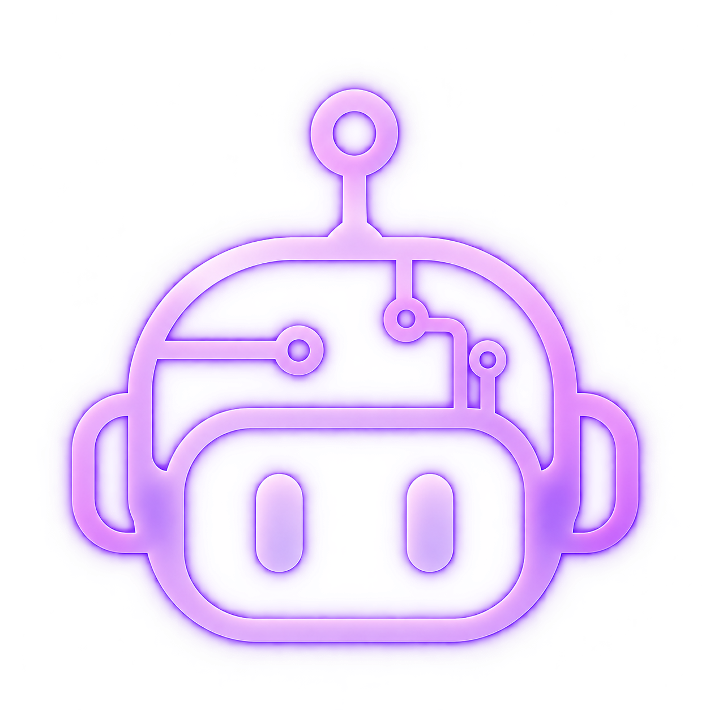
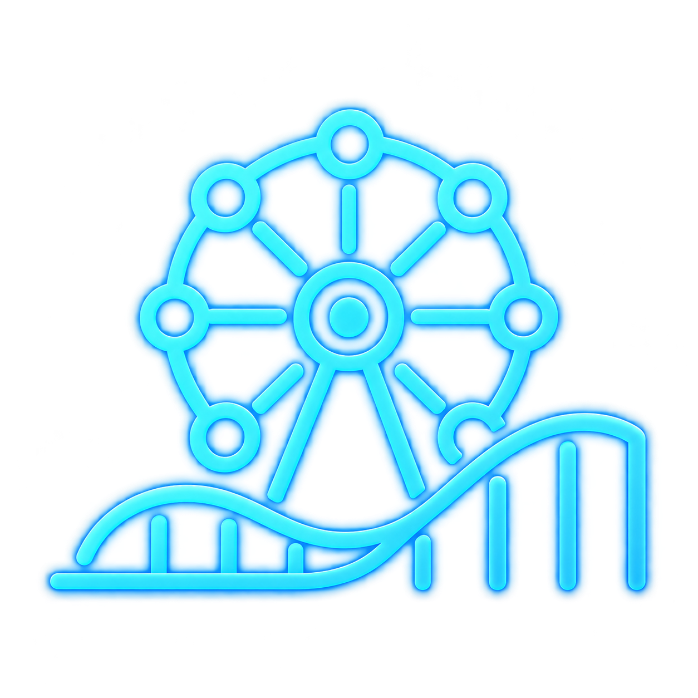
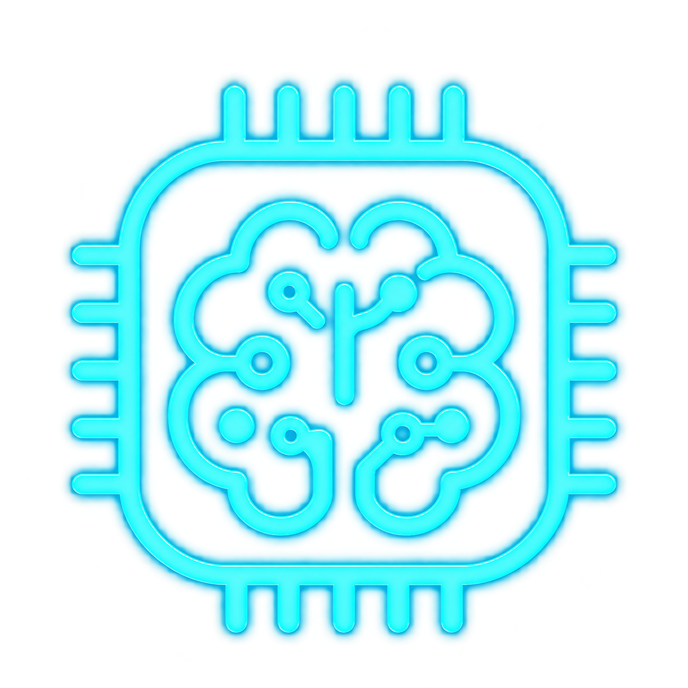

AI-assisted planning
ניתוח דרישות, זיהוי פערים והצעת מבנה לתהליך.
גיא קידר · Guy Kedar
Product Manager
אני לא רק "מתעניין ב-AI ומכיר את monday". אני מתכנן מוצר, מתרגם אותו למערכת עובדת, מודד אותו עם נתונים, מזהה נקודות כשל ומשפר אותו ב-iteration.
I design a product, translate it into execution, evaluate it with data, identify failure modes, and iterate.
The through-line
שני הקייסים למטה הם אותו סיפור: לוקחים תהליך, מתכננים אותו, בונים אותו במערכת אמיתית, מודדים, ומשפרים בעזרת AI.
01 · monday.com
לא רק שימוש בכלי. Product thinking: איך רעיון ותכנון הופכים למערכת עבודה אמיתית, מדידה ומשתפרת.
בארגון ממשלתי צוותי הפיתוח עבדו ללא שיטת עבודה אחידה: לא היה מקור אמת אחד למשימות, קושי לעקוב אחרי sprints, וחוסר שקיפות מול ההנהלה לגבי מה מתוכנן מול מה שבוצע בפועל. נדרשה שיטת Agile ומערכת ניהול עבודה שתייצר סדר, מדידה ושליטה.
לפני הבנייה הגדרתי את מבנה התהליך: שלבי העבודה, הסטטוסים, הישויות והמידע הנדרש כדי לייצר תהליך עבודה ברור ומדיד.
התכנון תורגם ללוח עבודה פעיל ב-monday.com, עם מבנה שמאפשר לצוות לנהל משימות, מעקבים, פגישות ותהליכים באופן שוטף.
טוטוריאל ב-6 חלקים. עברו בין החלקים לפי הסדר.
חלק 1 מתוך 6 · תכנון מול ביצוע
The real value isn't the plan. It's the ability to turn the plan into a working system, measure it, and improve it.
הצוות מנהל דרך הלוח משימות, פגישות ומעקבים. מקור אמת אחד לכולם.
עומס משימות, עמידה בזמנים, מהירות sprint והתקדמות מול תכנון, דרך dashboards ו-KPIs.
איפה התכנון פגש את המציאות: אילו סטטוסים היו מיותרים, איפה נוצרו צווארי בקבוק.
עדכון מבנה הלוח, פישוט סטטוסים והוספת אוטומציות בעקבות הנתונים מהשימוש בפועל.
AI × Product Execution
ניתוח דרישות, זיהוי פערים והצעת מבנה לתהליך.
סיוע בהפיכת התכנון למשימות ותהליכי עבודה.
ניתוח המידע שנאסף וזיהוי בעיות ודפוסים.
שימוש בתובנות כדי לשפר את המערכת שוב ושוב.
The same product mindset extends to AI agents. במקום רק לבנות Agent, אני בוחן איך הוא מתנהג בפועל, מודד את איכות התשובות, מזהה failure modes ומשפר את המערכת דרך evaluation ו-iteration.
02 · AI Agent
ECA Agent, מערכת SaaS פנימית מבוססת AI ברשות האכיפה והגבייה. לא "הובלתי פיצ'ר AI", אלא בעלות על האופן שבו ה-Agent חושב, ממוקם ומתנהג.
מיפיתי את נוף כלי ה-AI בארגון והגדרתי היכן ל-ECA Agent יש ערך שאף כלי אחר לא נותן. במקום לשכפל יכולות קיימות, מיקמתי אותו על מה שרק הוא יכול לעשות: מידע פנים-ארגוני רגיש שאסור שייצא מהארגון.
OpenAI / Claude, למשימות כלליות כמו סיכומים. לא למידע רגיש.
כלי מקצועי ייעודי לחקיקה ופסיקה כללית, שכבר בשימוש הארגון.
מידע פנים-ארגוני רגיש, שליפת נהלים וניהול ידע פנימי, בסביבה מאובטחת.
Data security first. אם מידע לא יכול לצאת מהארגון, שם ה-Agent מספק את הערך שאף כלי חיצוני לא יכול.
במקום להניח מה נדרש, אספתי דרישות מהמשתמשים בפועל כדי לזהות את הערך המוסף הספציפי, ותרגמתי אותן לגרסה מבוססת מאגר ידע שנשלחה לבדיקה מול המשתמשים.
סיוע בניסוח מסמכים על בסיס ידע פנים-ארגוני.
צורך אמיתי לסכם תיק שלם, לא רק מסמך-שניים. פתרון ביניים מיידי לצד בירור עומק.
שליפה מונחית של נהלים והנחיות ממערכת ניהול הידע.
Pipeline להוצאת מידע ממוקד ממאגר הידע ליצירת יישום ECA Agent ייעודי.
לאחר זיהוי ה-failure modes עדכנתי את קריטריוני ההערכה, והם נשמרו כחלק מהתצורה כדי לנהל כל evaluation עתידי. התוצאה: מעל יעד ה-80% בפער ניכר.
Let it iterate & evaluate itself.
The core insight
לא "הובלתי צוות ששחרר פיצ'ר AI". עיצבתי את אופן החשיבה של ה-Agent, כתבתי prompt evaluations, וניהלתי את מחזור חיי ה-LLM מקצה לקצה.
The real question isn't seniority. It's whether this person can own how the agent thinks.
03 · Projects
מגיימינג ואנימציה ועד AI וחומרה עתידנית. החוט המקשר הוא אני: לוקח רעיון ומוביל אותו למוצר חי, בכל דומיין.
פלטפורמת מיני-גיימס עם משחקי קזואל מכל הסוגים, שנותנת לשחקן הרגשה שהוא חלק ממשהו גדול יותר. פרויקט שהובלתי לאורך זמן, עם דור חדש בדרך.
↗סטודיו אנימציה חריף שהקמתי. סרטוני אנימציה שיווקיים דינמיים ובלתי נשכחים למותגים, עסקים ואירועים. כל האנימציות נעשו על ידי.
↗
Botlyבוט צמיחה לאינסטגרם ליוצרי תוכן ועסקים. מחקה התנהגות אנושית ומייצר צמיחה אורגנית שהאלגוריתם אוהב. הפכתי תובנה על האלגוריתם למנגנון צמיחה אוטומטי.
↗
Magic Kassאתר רכישת כרטיסים לפארק השעשועים המקורה הגדול בישראל. חוויה כיפית וצבעונית מלאה אטרקציות ומבצעים, +52% מכירות אונליין.
↗אתר למטפלת זוגית המתמחה בנפגעי טראומה צבאית ותהליכי פוריות. חוויה רכה, חמה ונגישה שבניתי מקצה לקצה.
↗
Synthetic Brainsחברת deep-tech בשלב מוקדם שבונה את חומרת האינטליגנציה. נוירונים מלאכותיים וסינפסות סינתטיות פיזיים בסיליקון, במקום לדמות רשתות נוירונים בתוכנה.
↗04 · About
Product Manager
הובלת תהליכי דיגיטציה וניהול מחזור חיי מוצר, הטמעת Salesforce CRM, בניית מערכת ניהול עבודה ב-monday.com עם dashboards ו-KPIs, והובלת ECA Agent, מערכת SaaS פנימית מבוססת AI.
Product & Media Manager
ניהול מחזור חיי מוצר מלא, שדרוג מערכות כרטוס (+52% מכירות אונליין), פיתוח אפליקציית תוכן בסגנון TikTok עם +3K משתמשים וגיימיפיקציה.
Client Services & Delivery Manager
ניהול Delivery ושירות טכני ללקוחות בשוק הבינלאומי, קואורדינציה בין לקוחות, עיצוב ופיתוח, והתאמת מוצרים ללקוחות שונים.
Front-End Developer & Art Director
פיתוח 20+ משחקים לפייסבוק ולקליינטים, עיצוב UX/UI ואינטגרציות מיתוג, וקיצור זמני טעינה ב-35%.
מפתח Flash בכיר ומעצב
עיצוב ופיתוח משחקים לפלטפורמת פייסבוק, עיצוב פלטפורמות למשחקים חדשים, ופיתוח אוטומציה לקמפיינים שיווקיים.
05 · Resume
אני מתכנן מוצר, מתרגם אותו לביצוע, מודד עם נתונים, מזהה נקודות כשל ומשפר ב-iteration. אשמח להראות איך זה נראה על מוצר אמיתי שלכם.